A phone-plan finder that shows the full 24-month cost before someone signs, and says so plainly when a plan is bigger than they need or over budget.
Try the prototype ↗Plans, prices and providers are invented. Nothing here is real pricing.
RoleSolo designer
TypeSelf-initiated concept
ToolsFigma Make, Figma
OutputWorking prototype, 5-step flow
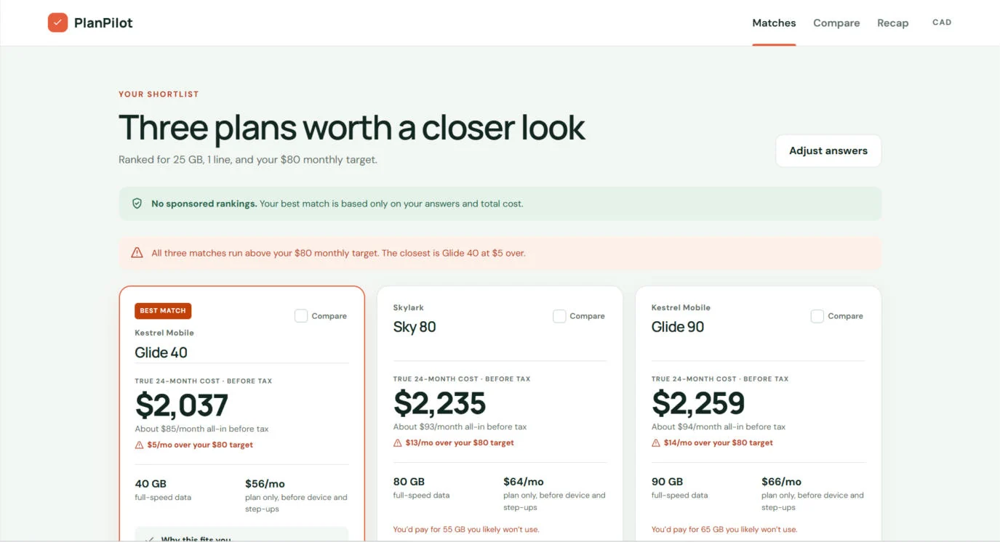
Results for 25 GB, $80 a month, calling the US and India. The cost over 24 months is the biggest number on each card.
Problem
The price you see is not the price you pay.
People choose a phone plan by its monthly price, and the real cost arrives later. Price step-ups, device payments, fees and calling-home charges hide behind that number. Shoppers can't see what a phone and plan will cost over time, or whether the plan fits how they use it.
I see this first-hand in customer-facing retail work in telecom. The pattern repeats: the rep explains, the customer nods, and the surprise shows up on the next bill.
The trust damage comes from the interaction, not from customer error.
Design thesis
From conversations to design
What I heard, and what I did about it.
These come from informal conversations in my day-to-day work, not a formal study.
What I heardDesign response
Price is the first concern. Phone plus plan often runs well past what people expect.
24-month true cost as the biggest number on every card, with the monthly average beneath it.
Calling family abroad matters a lot, especially for newcomers.
A country picker in the quiz, a covered or not covered line on every plan, and an overage estimate when a country is missing.
Data is oversold. Plans offer far more than people use.
Fit labels ("About 2.5x the data you use") and a plain warning on oversized plans.
People fear lock-in.
Contract term and exit cost shown up front and in the compare table.
People forget what the rep said.
A one-page "What you agreed to" recap to save or share.
Some people buy the phone separately and bring their own plan, but that plan steps up in price over time.
Path compare: bundle against bring-your-own-device, over 24 months.
Process
A precise spec did more than clever prompting.
I built the working prototype in Figma Make, following a beginner course for the tool, then treated the output as a first draft to critique.
Spec first
I wrote the cost rules down before asking for changes: how the 24-month cost is calculated, how plans are ranked and how each label is chosen. Every change ended with a pass or fail check, such as "for 25 GB, $80, calling the US and India, Glide 40 shows $2,037."
Reviewed in rounds
Seven rounds, one screen at a time, checking accuracy, hierarchy and honesty. Early rounds fixed logic. Later rounds fixed trust: budget status, right-sizing, the gap chart.
Checked outside the tool
I recomputed the key totals independently, so what the screens show is what the rules produce.
Tried the spec twice
I ran the same final prompt in a duplicate file. The results came out close, which suggests the spec mattered more than the tool.
Specrules and pass/fail checks
BuildFigma Make
Review7 rounds
Checknumbers recomputed
Key decisions
Six choices that made the tool trustworthy.
Say so when nothing fits the budget
Problem
In the default scenario all three best matches run above the $80 target. Hiding that makes the tool look better and the user trust it less.
Decision
Each card states "$X/mo over your target" or "Within your target". A banner appears when every match is over, and names the closest one.
Why
The tool's promise is no surprises. A tool that bends that promise to look friendly breaks it.
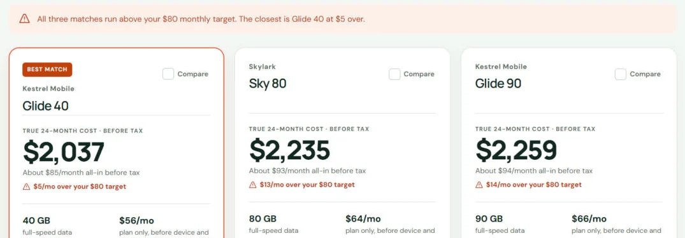
Glide 40 is the closest match, $5 over the $80 target, and the banner says so.
Right-size the data, don't celebrate big plans
Problem
Retail plans lead with big data numbers. A 90 GB plan for a 25 GB user feels like a deal and costs more.
Decision
Every plan gets a ratio-based label: short, right-sized, room to grow, or "About N.Nx the data you use". I also added a mid-range plan so the shortlist could include a realistic fit.
Why
Early versions ranked only oversized plans. That taught me the data set was part of the design problem.
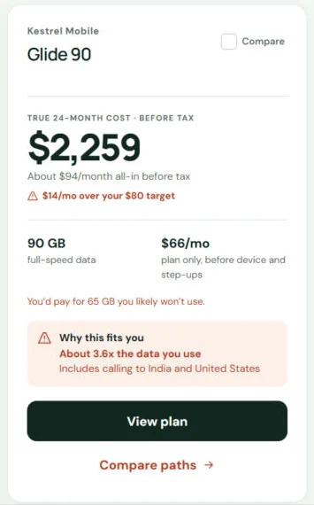
Glide 90 gives a 25 GB user about 3.6x the data they use, and the card says that.
Put a number on the calling trade-off
Problem
A cheaper plan can miss a country the user calls. The sticker price hides the cost of that gap.
Decision
The alternate card shows plan cost, an estimated overage (60 minutes a month to each missing country) and an all-in total. It appears only when its plan cost beats the best match, and says which plan is cheaper once calling is counted.
Why
The user compares on equal terms, and the labelled assumption keeps the estimate from reading as a promise.
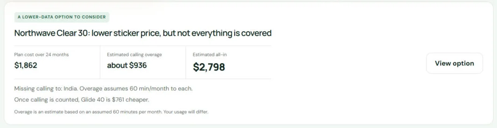
Clear 30 costs $1,862 but misses India. With about $936 of calling overage, Glide 40 is $761 cheaper.
A chart that answers one question
Problem
The first path chart plotted two near-identical rising lines. It couldn't answer "which is cheaper, and when?"
Decision
I plotted the difference between the two paths over 24 months, with the axis fitted to the data, a plain headline and a direction row ("Above $0: BYOD costs more"). A Total spend tab keeps the raw view. When totals are within 3%, a verdict line says the paths cost about the same and what differs is when you pay.
Why
Total-spend lines hide the story. The gap shows the cross-over, which is what changes someone's decision.
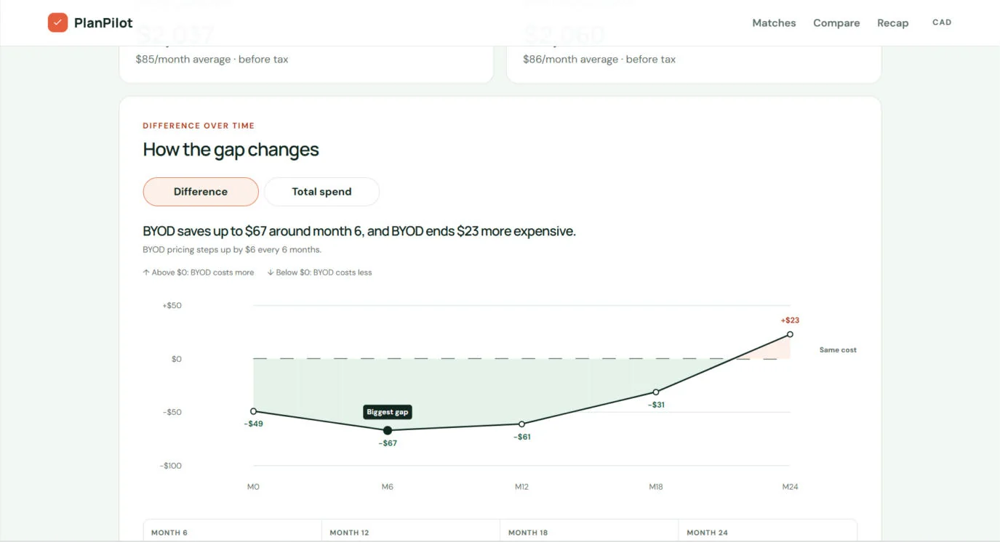
BYOD saves up to $67 around month 6 and ends $23 more expensive.
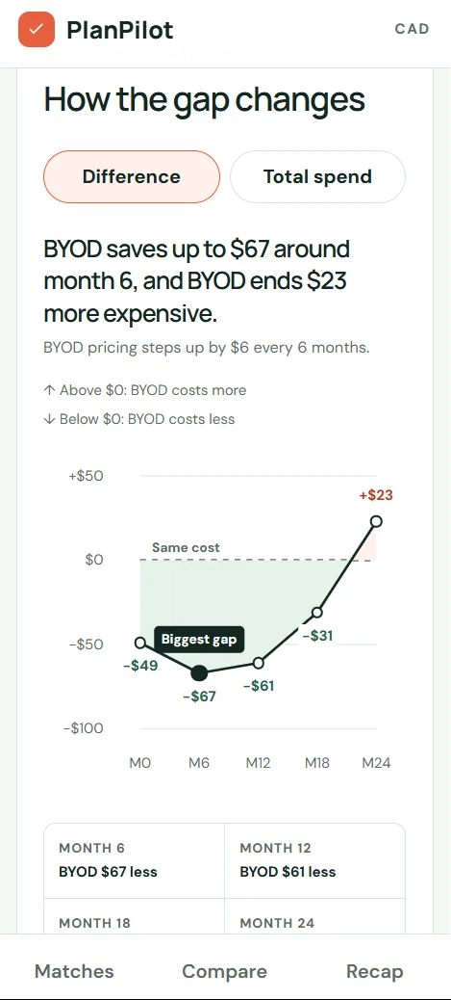
At 390px, "Same cost" stays on the left and clear of the +$23 point.
Color means one thing
Problem
Highlighting every different row in green made green meaningless.
Decision
Neutral shading for "different". Green only for "lowest", plus a text tag ("Lowest") so color is never the only signal.
Why
Meaning shouldn't depend on color alone, and a color that means one thing is faster to scan.
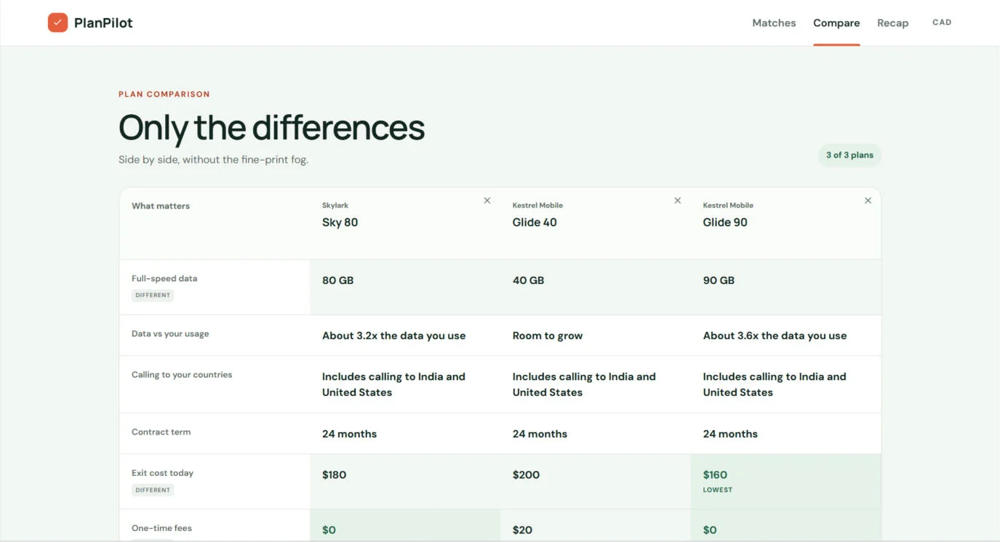
Different rows get a neutral chip. Only the lowest exit cost, $160, is green and tagged "Lowest".
Polish that people notice
Problem
On the charts, data points were drawn as stretched ovals because the chart scales to fit its container. On a phone, the compare table gave no sign that it scrolled sideways.
Decision
Lines stay in the scalable chart. The dots became separate round elements placed on top at the same positions. On mobile the table keeps its first column pinned, lets the next plan peek in and shows a swipe hint.
Why
Small distortions make a data tool feel less exact, and exactness is the point of this one.
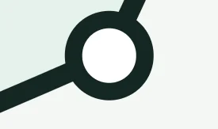
A chart point after the fix: a round dot, shown at 9x zoom.
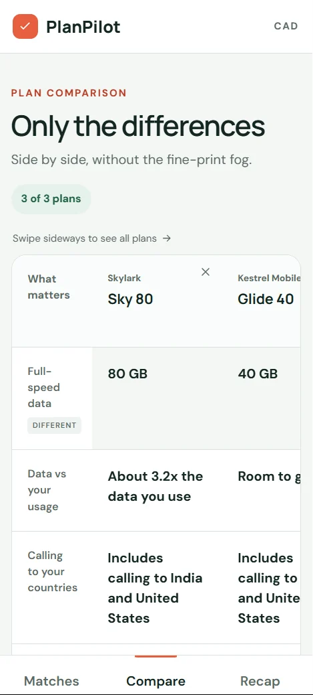
At 390px, the first column stays pinned and Glide 40 peeks in beside Sky 80.
Before and after
The first generated version, next to the final.
Path chart
Before
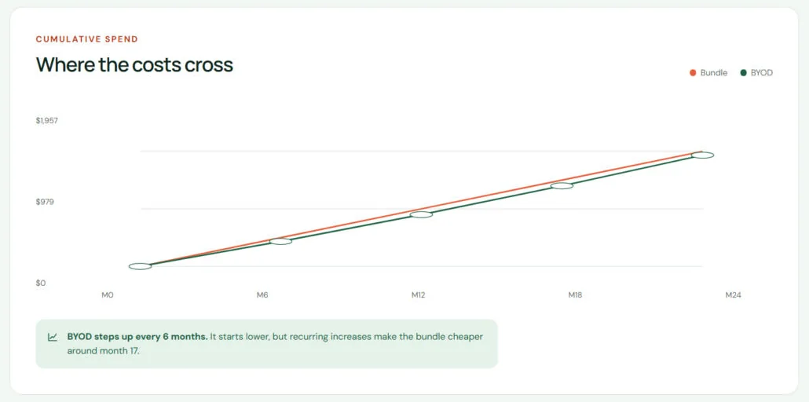
First generated version: two lines almost on top of each other, stretched-oval dots, and one sentence about "around month 17".AfterA gap chart with a plain headline, a direction row, labelled values and a "Biggest gap" marker, plus a Total spend tab with round dots.
Results
Before
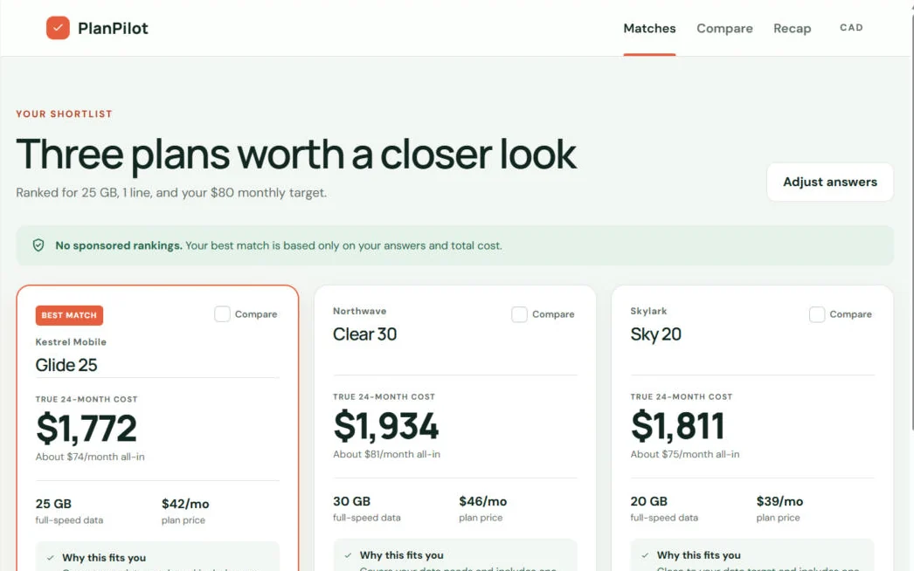
First generated version: three cards with a cost and a generic "covers your needs" line. No budget status, fit labels or alternate card.AfterBudget status on every card, a banner when all matches run over, fit labels, oversize warnings and the calling trade-off card.
Compare table and plan detail
After: compareBefore: every different row highlighted the same way. Now neutral for "different", green and a "Lowest" tag only for the lowest value.After: plan detail
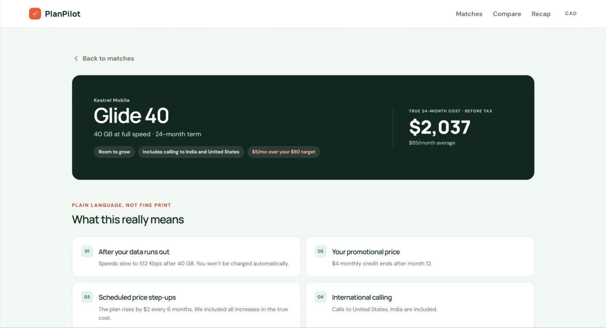
Before: a plain hero with just the cost. Now hero chips for fit, calling and budget status.
Outcome
What it does, what it doesn't prove, what I'd test next.
Achieved
A complete, working flow, from needs quiz to a shareable recap.
Every number on screen traces back to a written rule.
The tool says so when a plan is oversized, over budget or missing a country.
Limits
It's a concept with invented plans. Nothing here is real pricing.
The insights come from my own retail conversations, not a formal study.
No usability testing yet, so I can't claim the design works for real shoppers.
Next
Whether people understand the gap chart without help (five-second test, then think-aloud).
Whether the recap changes how well people remember what they agreed to.
Whether the over-budget banner changes which plan people pick.
What I learned
A precise, testable spec gets better work out of a generation tool than clever prompting.
The data you design with is part of the design. A shortlist full of oversized plans looks like a UI problem and is a content problem.
Honesty is a design feature. Each time I chose clarity over a flattering number, the product got better.
Play with it, then tell me
Try the prototype and give me your first reaction.
This is early, informal feedback, not a usability study. It helps me decide what to fix first. Open the prototype, run the default scenario, then answer whichever you like:
Open the "Path compare" chart for Glide 40. In five seconds, what does it tell you?